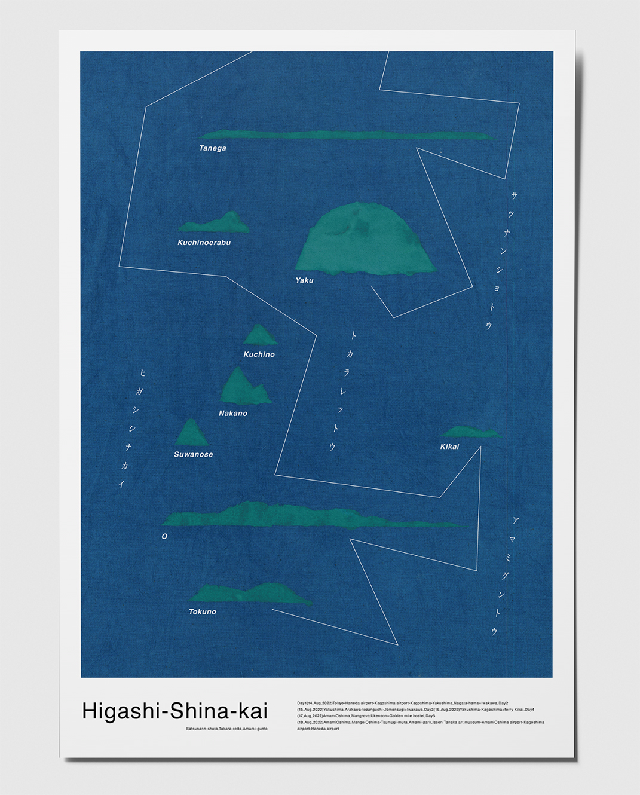
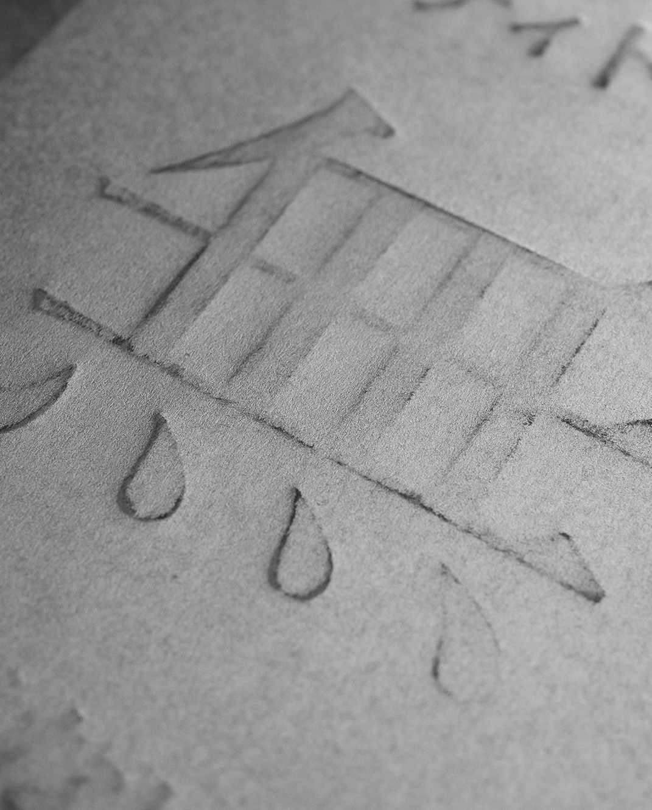
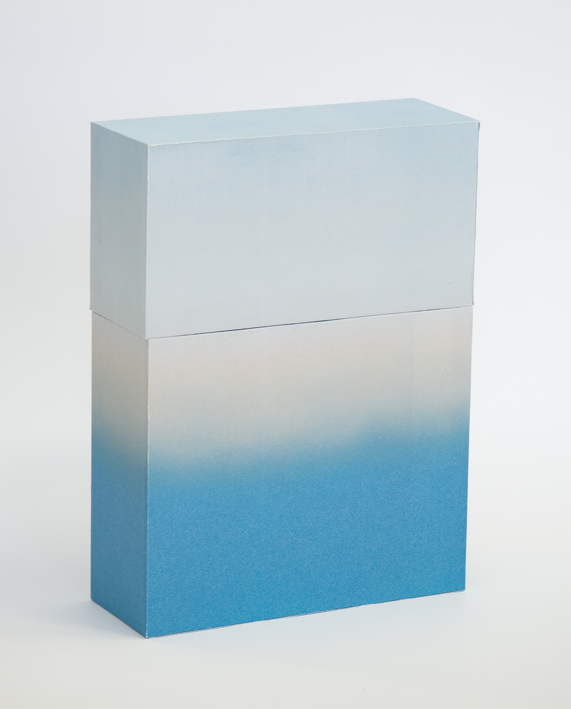
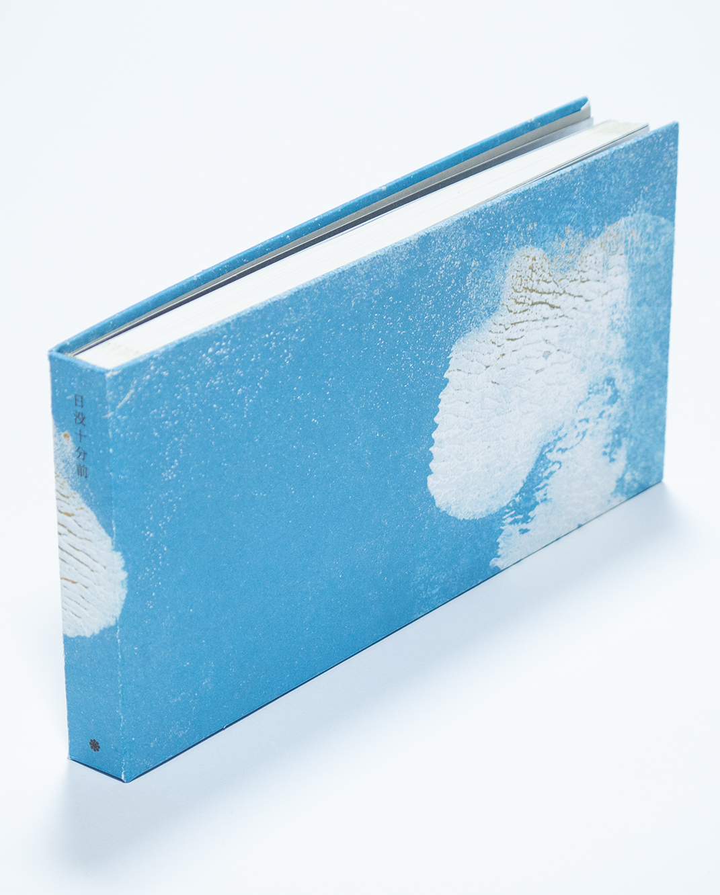

自然に呼応するグラフィックデザイン
text Yasunobu Idei
photo Yasunobu Idei

日本の街は、どこも同じ見た目、そしてゴチャゴチャしている。これは私がここ数年感じている課題である。東京から少し車を走らせ郊外に行く。そこには住宅や田畑、自然、工場といった日本の平成時代以降の当たり前の風景が広がっている。そして、この風景はコンビニエンスストアのように日本全国どこに行っても見ることができる風景。住宅や田畑を抜けると街道沿いにたくさんのチェーン店が見えてくる。私が課題に感じたのはこの風景だ。日本全国どこに行っても同じ街道を走っているのではないかと錯覚してしまうほどありふれている。その土地の文化や風土のかけらも見ることができない。
私は2022年、東京都八王子市と共に、八王子の街に来てくださった方を歓迎するウェルカムフラッグのデザイン制作を行った。その制作をするに従い、八王子駅北口を歩き回った。統一感がない。街に統一感がない。闇雲に乱立するカラフルな看板、照明、音。昔、呉服屋や黒壁で形成されていた美しい街並みは商店街の裏側のわずかな場所にしか残っていなかった。これを課題に考えているのは私だけではなかった。八王子市もこれを課題に感じ「まちなみ景観課」が中心となって解決しようとしている。

では、なぜ、こうなってしまったのか。街を形成する要素を見ていくとわかる。八王子の街はチェーン店でありふれている。チェーン店はどこの街でも同じ価値を提供してくれる。そしてその同じ価値を提供してくれることを日本全国（あるいは世界全国）で同じデザインを目印として教えてくれる。このように外から来たものが、その土地の文化や風土と関係のないデザインを乱立させることで、無秩序なゴチャゴチャな街を作り出す。そして冒頭で述べた、「日本全国どこに行っても見ることができる風景。」を作り出すのだ。
チェーン店という文化ができる前の街は、外から入ってくるのではなく、内側からその街を形成していた。そこに古くから住み着く人々が、その土地のものを使って街を形作る。そこにはそこに住む人々共通の美的感覚や文化が備わっており、それぞれの場所に固有の「デザイン」というものがあった。それらの美的感覚や文化はその土地の風土から形作られる。その土地が元来もつ特徴の中で美しく、良いものが美とされ残り続けてきた。
風土が作り出した文化の一番大きな例として、「暗がりの文化」がある。日本人は西洋人とは異なり古来から「暗がり」を好んできた。西洋人が照明をたくさん使った豪華な空間を好むのとは反対に、日本人は茶室のような照明は最低限で装飾も控えめなものを美としてきた。これらの違いは日本の湿潤な気候や風土、そして私たちが元来持つ肌の色が根本に関係していると言われている。私はグラフィックデザインという側面からこの課題を捉え、どう物づくりをしていけば良いのかを考えてきた。

人間の活動において、持続可能性、サステナブル、これらの言葉は近年どのジャンルにおいても重要なものとなってきた。しかしこの考えは、自然界では地球が誕生した時から存在する考えであり、その原理に従って生命活動を行なってきた。人類もその重要性に1990年代には気づき始めていた。1990年代、アメリカのJamine M Benyusが「バイオミミクリー（生物模倣）」という考え方を提唱し、それは自然界のものづくりやサイクル、仕組みに学び持続可能性のある世界を作ることが目的であった。「持続性のあるデザインは持続可能性を目指す革命の先駆けとなり、その実現に貢献できる。」それはグラフィックデザインというものづくりのジャンルにおいても同じことが言えるのではないだろうか。
持続可能性のあるグラフィックデザインとは何か。１つ目は使い捨てされるものではなく、その地に馴染み、その地に残り続けるグラフィックデザインである。時代時代で流行が存在し、それに沿ったデザインというものもある。それらは一つの時代に大量に使われ、流行が過ぎ去るとその役目を終え消え去っていく。もちろん、その時代と社会に合わせたデザインというものであることが絶対に重要であることは前提に、時代を超え、長く使われるものにはその地に馴染み、残り続けるものを作らねばならない。２つ目はその空間や自然に馴染むべきグラフィックデザインである。グラフィックデザインはその用途にもより、目立たなければならないものや、その空間に馴染まねばならないものがある。「街の景観」はその土地や自然、文化に馴染むものでなければならない。美しい街並みは自然環境とその地域の人間の関わりによって形成されてきた「風土の色」を読み取り、その色の調和を考えることで形成されている。この例のようにその土地や自然に馴染むデザインはその土地や自然から作られたデザインであり、持続可能性のあるデザインであると言えるのである。
持続可能性のあるグラフィックデザインを作る。それには先に述べた「街の景観」のように空間に馴染むデザイン、自然に馴染む、共生するデザインを作る必要性がある。制作のための手法の一つとして、我々人間よりはるかにその土地に精通した「風土」からグラフィックデザインの知恵を借りることができる。風土にはここでは８つの要素が存在すると考える。「気候」「地形」「水」「土」「空気」「植生」「生物」「文化」である。人間が生み出した文化以外の7つの要素は、人類が誕生するはるか太古からお互いに影響を及ぼし合いながらうまく調和し同じ地の要素として存在してきた。この、その土地でうまく調和してきた要素から知恵を借りることでその土地に馴染んだグラフィックデザインを制作できる。周囲の環境に溶け込み、敬服する対象に近づくことができる。また、バイオミミクリーの考え方の中においても、「必要なものは地域内で調達する」必要があることを提言されている。しかしこれらの要素から知恵を借りるためにはそれらを、またそれらの関係性を十分に理解する必要性がある。
自然に呼応するグラフィックデザインを作る。グラフィックデザインをいかにして環境に調和させることができるか。生物は長い地球の歴史の中で環境に合わせて姿を変えてきた。また、短期的なスパンで見ても、アマガエルのように自らの住む環境に合わせてデザインを変えてその環境に調和することを試みる。それはその土地の景観を考えた上で、自らが景観に調和することで息位伸びる可能性が高まるからである。同じようにグラフィックデザインも環境に合わせて変化を試みることで調和したデザインとなるのではないだろうか。私はそのデザインを自然に呼応するグラフィックデザインと名付け、様々な題材と自然の模倣を用いStudyを行う。
